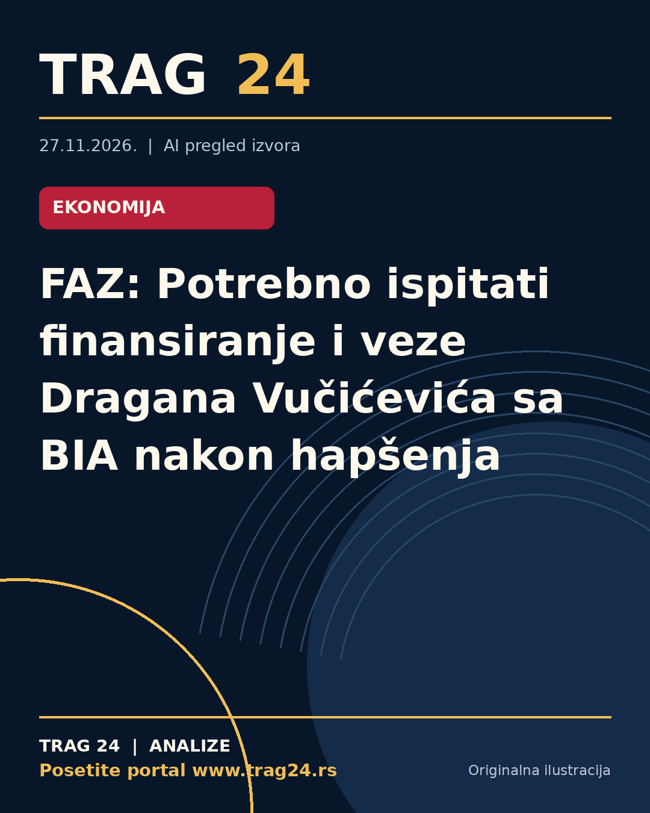

FAZ: Potrebno ispitati finansiranje i veze Dragana Vučićevića sa BIA nakon hapšenja

ŠTA SE DOGODILO
Dragan J. Vučićević, vlasnik i glavni urednik medijske kuće Informer, priveden je u okviru istrage koja je označena kao značajan događaj u političkom kontekstu Srbije nakon izbora 25. oktobra. Vučićević je osumnjičen da je duži vremenski period izazivao paniku, remetio javni red i ometao pravdu.
HRONOLOGIJA
Nakon izbora u Srbiji, politička i društvena situacija doživela je promene koje su do pre par meseci delovale nezamislivo. Hapšenje Vučićevića smatra se ključnim momentom u ovom periodu. Nemački list Frankfurter algemajne cajtung (FAZ) je detaljno izveštavao o ovom događaju i povezanim okolnostima, kao i o reakcijama dešavanja na domaćoj medijskoj sceni i unutar vlasti.
ŠTA NAVODE IZVORI
Nemački list FAZ navodi da je Vučićević bio verni saveznik bivšeg predsednika Aleksandra Vučića i korisnik neograničenog prostora u medijima kako bi huškao protiv političkih protivnika Vučića. Takođe, FAZ prenosi upozorenje Stevana Dojčinovića, glavnog urednika portala KRIK, koji ističe da je prerano za trijumfalizam jer se Vučićević tereti za "apsurdno delo" koje je korišćeno kao instrument represije na prethodnoj vlasti. Takođe, upućuje se zahtev da se preispita način finansiranja Informera, od kojeg je, prema navodima, primao milione iz državnog budžeta, kao i saradnja sa tajnom službom BIA, koja je, navodno, pratila i prisluškivala različite građane i dostavljala informacije Informeru.
ŠTA JE POTVRĐENO
Potvrđeno je hapšenje Dragana Vučićevića i optužbe tužilaštva koje ga sumnjiči za izazivanje panike i nereda. Takođe su verificirani navodi da je Informer bio poznat po širenju govora mržnje, huškanju i objavljivanju kontroverznih sadržaja, uključujući naslove i komentare kritikovane kao mizogine i ponižavajuće. Postoji i potvrda da je Vučićević bio dugogodišnji prijatelj i saradnik bivšeg predsednika Vučića, koji mu je javno pružao podršku.
ŠTA NIJE POTVRĐENO
Nisu potvrđene tvrdnje o direktnom nezakonitom finansiranju Informera iz budžeta niti o nezakonitom korišćenju obaveštajnih podataka od strane BIA. Takođe, nije potvrđeno da li će ove optužbe rezultirati pravosudnim sankcijama prema Vučićeviću. Nema podataka iz drugih nezavisnih izvora koji bi potvrdili te navode, već se zasnivaju na oceni i analizi nemačkog medija FAZ i izjavi urednika KRIK-a.
ŠTA OSTАJE OTVORENO: Ostaje neizvesno kako će se dalje razvijati istraga o finansiranju i saradnji Informera sa državnim institucijama kao i konačni ishod slučaja u pravosudnom sistemu. Takođe, ostaje pitanje da li će se pokrenuti šira istraga o ulozi medija u političkim procesima u Srbiji i o eventualnim zloupotrebama kroz medijske sadržaje. Očekuje se da će naredni koraci tužilaštva i reakcija medija i javnosti biti ključni za dalji razvoj situacije.
Izvori
- https://nova.rs/vesti/drustvo/faz-vucicevic-treba-da-objasni-milione-iz-budzeta-i-veze-sa-bia/
- https://n1info.rs/vesti/faz-vucicevic-treba-da-objasni-milione-iz-budzeta-i-veze-sa-bia/
- https://www.danas.rs/svet/nemacki-list-vucicevic-milioni-budzet-bia/
Ova analiza je pripremljena uz pomoć veštačke inteligencije na osnovu javno dostupnih izvora. Navodi izvora nisu nužno nezavisno potvrđeni.